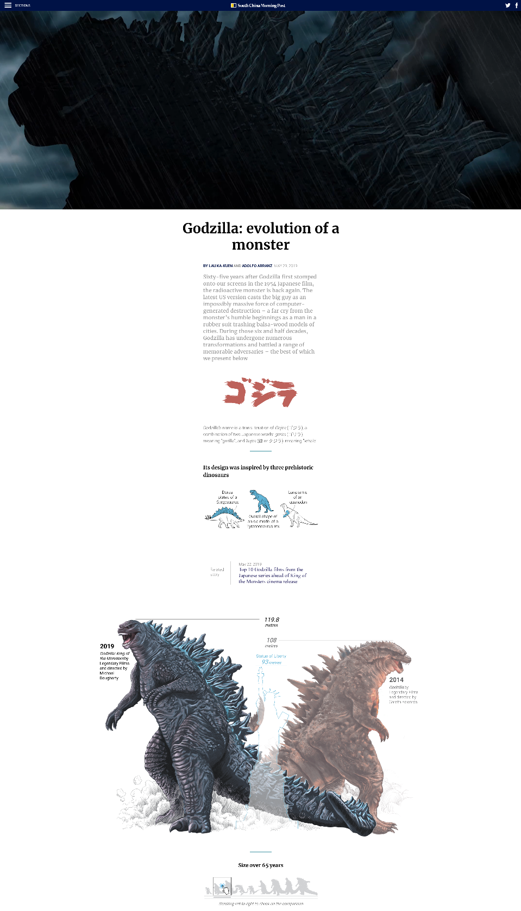
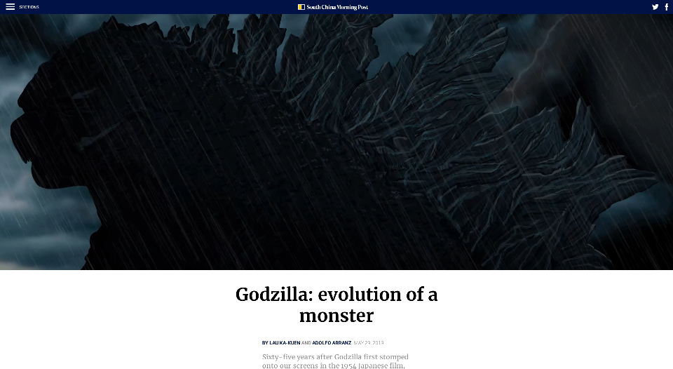
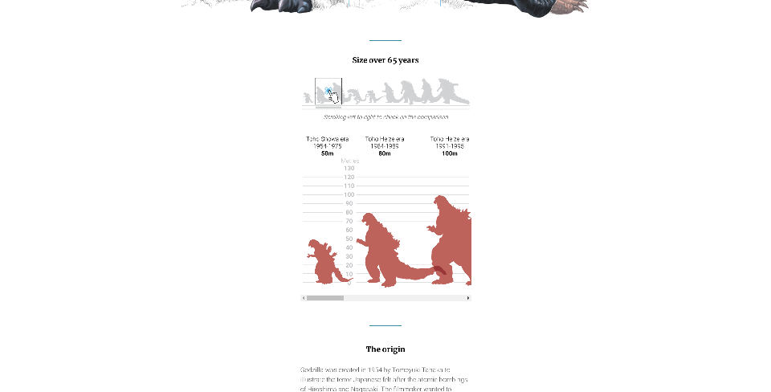
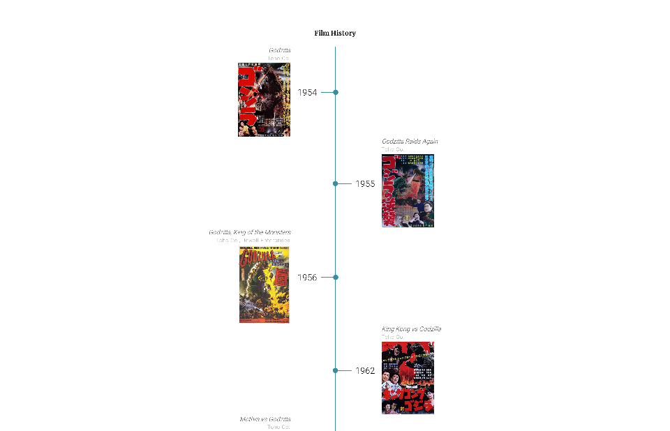

INFOGRAFÍA IMPRESA
En esta infografía, observamos una imagen principal que nos muestra una comparación entre las versiones de Godzilla en los films de 1954 y 2014. En ella es posible distinguir varias gráficas figurativas que nos ayudan a comprender su origen, su paso por la historia del cine, sus enemigos, etc.
Un primer gráfico grande, que es un gráfico figurativo, y que nos sirve para visualizar la diferencia entre las magnitudes del Gozilla de 1954 y el de 2014 y a la vez comparar sus respectivas partes.
El segundo gráfico grande, corresponde a un gráfico mixto, porque contiene datos cuantitativos pero a la vez se hace uso de ilustraciones que nos ayudan a visualizar los diferentes tamaños por los que ha pasado Godzilla en los últimos años.
También hay un grupo de gráficos pequeños que acompañan la imagen grande, la primera nos muestra los distintos dinosaurios que inspiraron la creación de Godzilla, más abajo a la izquierda vemos el origen de su creación, y el traje utilizado para la grabación del primer Godzilla.
El grupo de gráficos figurativos e ilustrados que vemos en la parte inferior de la infografía nos muestran diferentes enemigos de Godzilla.
INFOGRAFÍA DIGITAL
La primera de las grandes diferencias que llama la atención en la versión digital es que la diagramación de la información es lineal de manera en la que se puede "hacer scroll" mediante ella.
Al inicio de la infografía también vemos un gif ilustrado de Godzilla que obviamente no estaba presente en la infografía impresa, y que causa un gran impacto a primera impresión.
A diferencia del gráfico mixto que sobrepone ilustraciones sobre otras para poder comparar los tamaños, en este podemos "hacer scroll" de izquierda a derecha para visualizar las diferentes alturas.
A diferencia de la infografía impresa que apenas nombra algunas películas, al final de la versión digital podemos ver una larga línea de tiempo con todos los films (o casi todos) de Godzilla.
¿Cómo podrían justificarse todas las modificaciones? ¿Se trata de una simple adaptación de datos de un sustrato a otro? Convendría pensar en una reestructuración completa del trabajo infográfico, que se hace atiendiendo a los usos y costumbres asociadas a cada medio?